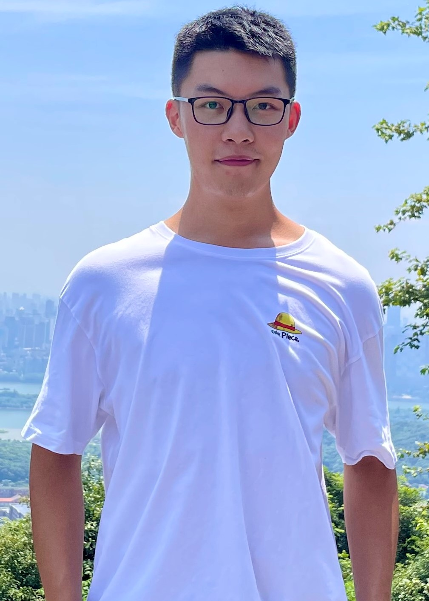

Qiming Wu
|  | 吴启铭 Qiming Wu ACM Member (2021) IEEE Student Member (2020) Undergraduate Student School of Eletronic Information and Communications Huazhong University of Science and Technology, China. Email:qimingwu@hust.edu.cn |
Bulletin
I am looking for the intern positions in industry in the spring 2022 (from 02/2022 - 06/2022), feel free to email me!
Introduction
09/2018 - 06/2022: I was an undergraduate student at Huazhong University of S & T (HUST), major in the Eletronic Information Engineering.
06/2019 - 04/2021: I was the research assistant in the National Laboratory for Optoelectronics (NLO) in HUST, supervised by Prof. Pan Zhou.
04/2021 - 06/2022: I was the research assistant in the Artificial Intelligence Institute (AII) in HUST, supervised by Prof. Xinggang Wang.
03/2021 - 10/2021: I did my research intern in VITA Group at UT Austin, supervised by Prof. Zhangyang (Atlas) Wang.
I work closely with the R&D Engineer Zhikang Zou in the Depratment of Computer Vision Technology in Baidu Inc.
I work closely with the Prof. Binghui Wang, Computer Science Department in Illinois Institute of Technology (IIT).
News
[October 2021] Two patents have been authorized by China National Intellectual Property Administration.
[July 2021] One paper accepted by ACM Multimedia (MM) 2021, I am the first author.
CV
Here is my CV.
Research Interests
Efficient Deep Learning
Sparse Neural Networks (recently in particular the Lottery Ticket Hypothesis)
Trustworthy Artificial Intelligence
Education
Huazhong University of Science and Technology
B.E. In Electronic Information Engineering
From 09/2018 to 06/2022
GPA: 3.7/4.0
Publications
-
Towards Adversarial Patch Analysis and Certified Defense against Crowd Counting [paper]
Qiming Wu, Zhikang Zou, P. Zhou, Xiaoqing Ye, Binghui Wang, Ang Li
In Proceedings of ACM Multimedia (MM), 2021 (Accept Rate: 542/1942 = 27.9%)
-
Lottery Image Prior [paper]
Qiming Wu, Xiaohan Chen, Yifan Jiang, P. Zhou, Zhangyang Wang
In Proceedings of International Conference on Learning Representations (ICLR 2022), Under Review.
-
“Reg-IBP: Efficient and Scalable Training for Robust Neural Networks via Interval Bound Propagation
Wenjie Qu*, Qiming Wu*, P. Zhou, P. Xu, Bo Li
Under Review.
-
Certified Radius-Guided Attacks and Efficient Robustness Training against Deep Neural Networks
Wenjie Qu*, Binghui Wang*, Qiming Wu, P. Zhou
Under Review.
Experience
Due to the COVID-19 epidemic, my internship experiences are mainly online (remote).
06/2019 - 04/2021: Research Assistant, National Laboratory for Optoelectronics (NLO) in HUST, Advisor: Prof. Pan Zhou.
12/2020 - 04/2021: Research Intern (Remote), Department of Computer Vision Technology, Advisors: Xiaoqing Ye (Senior Researcher & Engineer), Zhikang Zou (R&D Engineer)
04/2021 - 10/2021: Research Intern (Remote), University of Texas at Austin, Advisor: Prof. Zhangyang Wang
08/2020 - 02/2021: Research Intern (Remote), NSF Industry-University Cooperative Research Center (IUCRC) for Alternative Sustainable and Intelligent Computing (ASIC), Duke University , Advisors: Prof. Binghui Wang (IIT) & Prof. Yiran Chen (Duke)
Patents
-
A Certified Radius-Guided Attack Method, Optimization Training Approach and System
Patent Number: ZL202110583029.7
China National Intellectual Property Administration, 2021
-
Momentum-based Method and System for Generating Adversarial Examples against Crowd Counting Models
Patent Number: ZL202110588717.2
China National Intellectual Property Administration, 2021
Awards and Honors
2020 & 2021, The People’s Scholarship in China - Scientific and Technological Innovation Scholarship, HUST
2019 & 2020 & 2021, The People’s Scholarship in China - Perseverance Scholarship, HUST
2019, The People’s Scholarship in China - Public Welfare Scholarship, HUST
2019, Second Prize, May Fourth Speech Competition, HUST
2019, Third Prize, Asia and Pacific Mathematical Contest in Modeling (APMCM)
2019, Second Prize in the HUST Competition Area, Present Around the World (PATW) Competition Hosted by The Institution of Engineering and Technology (IET, U.K)
2019, excellent volunteer, National Undergraduate Electronics Design Contest
2017, China-Japan Youth Ambassador
Photos
Group Photo with Prof. Brian A. Barsky (UC Berkeley):
Speech Competition:
During the ambassadorship in Japan: